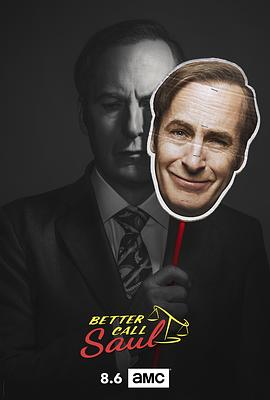

风骚律师 第四季 / Better Call Saul Season 4
又名：绝命律师(台) / 索尔最高 / 索尔热线
感觉这季叫 Better Call Mike/Fring
作品信息
| 导演 | 明基·斯皮罗 / 米歇尔·麦克拉伦 / 丹尼尔·沙克海姆 / 约翰·施班 / 迈克尔·莫里斯 / 安德鲁·斯坦顿 / 黛博拉·周 / 吉姆·麦凯 / 文斯·吉利根 / 亚当·伯恩斯坦 |
| 编剧 | 文斯·吉利根 / 皮特·古尔德 / 托马斯·施纳泽 / 戈登·史密斯 / 马里恩·德尔 / 安·彻基斯 / 珍妮弗·哈奇森 / 艾莉森·塔特洛克 |
| 主演 | 鲍勃·奥登科克 / 乔纳森·班克斯 / 蕾亚·塞洪 / 帕特里克·法比安 / 迈克尔·曼多 / 吉安卡罗·埃斯波西托 / 蒂娜·帕克 / 马克·马戈利斯 / 凯瑞·康顿 / 斯蒂芬·卡皮契奇 |
| 类型 | 剧情 / 犯罪 |
| 制片国家/地区 | 美国 |
| 语言 | 英语 |
| 首播 | 2018-08-06(美国) |
| 季数 | 4 |
| 集数 | 10 |
| 单集片长 | 60分钟 |
| IMDb | tt7073996 |
说过什么
2020-09-09 21:29:06
广播 · 看过 · ★★★★★
感觉这季叫 Better Call Mike/Fring
2020-09-08 11:40:49
广播 · 在看
最后一次看到是 2026-08-01T11:05:29+10:00 · 豆瓣原页